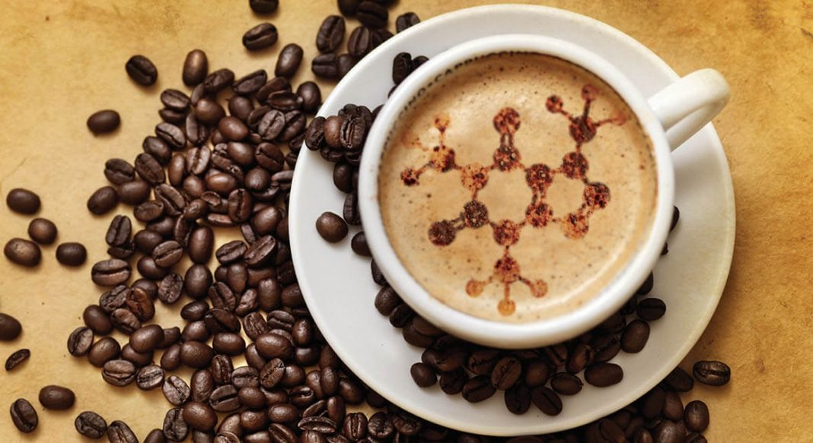

Kafein Oranı En Yüksek Kahve Hangisi? - Kahveye Dair Her Şey
Kafein oranı yüksek kahveler nelerdir? Hangi kahvede ne kadar kafein var? En yüksek kafein oranına sahip kahve hangisi? Bu içeriğimizde keşfedin!
Daha Fazla